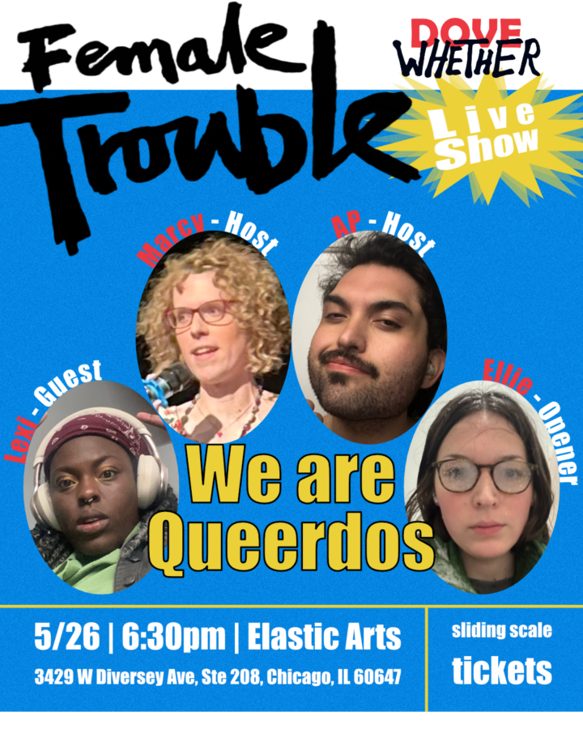

Dovewhether Live Show | Female Trouble
Marcy and AP of Dovewhether are having a live show on May 26th!!! They have hosted Dovewhether, a gay socialist podcast about media and art, for 2.5 years. Last time they tried to host a live show someone almost [REDACTED] one of our co-hosts. After surviving a near-death experience, bottom surgery and coming out as gay on the podcast, they’re ready to put on a show if it’s the last thing they do! The theme of the night will be John Waters’ Female Trouble. A queer staple, a rainbow paperclip, gay tape.
The show will start out with standup from rising comic and Phineas and Ferb superfan Ellie. The two Doves, Marcy and AP, will host a Divine discussion of Waters’ classic with special guest star and dungeon master extraordinaire Lexi. Rumor has it there may be a DJ AND a puppeteer.
You don’t need to be a fan of the podcast to enjoy the show. The goal is to entertain you regardless if you know what the hell Dovewhether means.
Tickets are for sale now, sliding scale and $ will go to paying our guests and the venue fee. Anything extra will go to Chicago Abortion Fund. If you don’t have money! STEAL! If you’ve never committed a crime! What part of Be Gay Do Crime do you not understand? What are you waiting for? An invitation!? You have one already! Buy tickets now!
Doors: 6:30PM
Show: 7:00PM